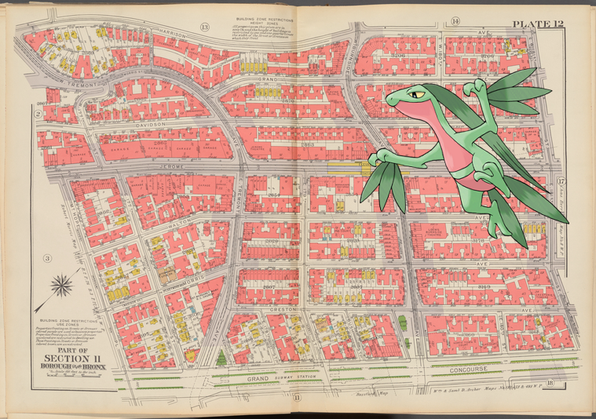

Pokémon in the NYPL archives
2018-4-9 00:10:04
Wooper ;
Views of the Estrada de Ferro Madeira e Mamore Amazonas & Matto Grosso, Brazil S.A.
.
2018-4-8 20:10:04
Klang @
Ptolemaeer. Ptol. IX Euergetes II. a. Ombos. Grosser Tempel, erste Säulenhalle; b.c. Philae. [b-d] Grosser Tempel, Hypostyl, [e] Tempel P, [f] Tempel J.
!
2018-4-8 14:10:05
Rapidash @
Plate 10 [Map bounded by W. 130th St., 8th Ave., 10th Ave.]
!
2018-4-8 12:10:05
Lucario on
Provost Guard attacking the rioters
.
2018-4-8 10:10:04
Dunsparce, Kingler @
Papyrus, hiéroglyphes, inscriptions et médailles. Pierre trouvée à Rosette, (partie supérieure, en écriture hiéroglyphique).
2018-4-8 08:10:11

Grovyle –
Double Page Plate No. 12, Part of Section 11, Borough of the Bronx: [Bounded by Harrison Avenue, W. 181st Street, E. 181st Street, Grand Concourse, Mt. Hope Place, Jerome Avenue, W. 177th Street and W. Tremont Avenue]
.
2018-4-8 06:10:06
Lickitung –
Worlds championship series, Detroit B B C official score card [with image of Twitchell, Conway, Gatzein, Dunlap, Brouthers, White, Baldwin, Watkins, Bennett, Thompson, Hanlon, Richardson, Ganzel, Rowe].
.
2018-4-8 04:10:05
Seel, Bronzong –
Susan and child facing each other.
.
2018-4-8 02:10:06
Spinarak, @
France, 1809
!
2018-4-8 00:10:04
Patrat @
View of the mountain Baba-Naunee, called Kutl-Cahor.
!
2018-4-7 22:10:11
Sawk |
Negro Woman
.
17
|
16
|
15
|
14
|
13
|
12
|
11
|
10
|
9
|
8
|
7
|
6
|
5
|
4
|
3
|
2
|
1
|
0

![Klang – Ptolemaeer. Ptol. IX Euergetes II. a. Ombos. Grosser Tempel, erste Säulenhalle; b.c. Philae. [b-d] Gr… http://digitalcollections.nypl.org/items/03391140-c6de-012f-6625-58d385a7bc34](media/finding-YMXuighJ.png)
![Rapidash @ Plate 10 [Map bounded by W. 130th St., 8th Ave., 10th Ave.]! http://digitalcollections.nypl.org/items/d1442cd0-c604-012f-b9ef-58d385a7bc34](media/finding-lexHXJlS.png)
 Lucario on Provost Guard attacking the rioters.
Lucario on Provost Guard attacking the rioters.
 Seel, Bronzong – Susan and child facing each other..
Seel, Bronzong – Susan and child facing each other.. Spinarak, @ France, 1809!
Spinarak, @ France, 1809! Sawk | Negro Woman.
Sawk | Negro Woman.